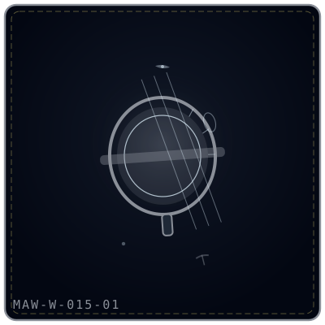
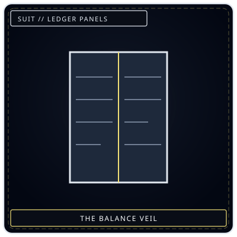
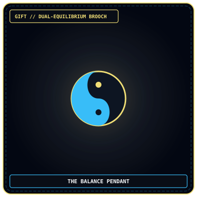

Record consent
One hand begins consultation; judgment requires a second party and witness.

빚의 저울
“It weighs beggar and Collector alike. The danger is not that it lies. The danger is that it does not know mercy.”
One hand begins consultation; judgment requires a second party and witness.
Separate personal, inherited, imposed, and misrecorded obligation.
Identify who selected the category and who gains from enforcement.
The beam establishes what is carried, never what punishment or mercy is just.
The Debt Scale is an articulated bone balance created when citizens demanded an impartial measure from a corrupt system. It measures obligation accurately and without preference, but accuracy contains no mercy and can be weaponized by whoever chooses the category, supplies the ledger, and enforces the result. A voluntary reading requires one hand; a judgment requires a second party and witness.
A dry, warm frame of yellowed articulating bone supports two cloudy crystal dishes. The joints creak as the beam moves without touch. No number appears. The user experiences debt as physical and emotional weight while the dishes display imbalance. The Scale never declares anyone perfectly empty and does not decide whether the measured obligation is fair.
Citizens asked for an honest scale because Collectors placed a thumb on every corrupt measure. The Weeping answered literally. The resulting object confirmed that the poor carried more because the city had arranged it so. Collectors adopted the very fairness demanded against them, turning impartial accuracy into a stronger instrument of enforcement.
No direct response; grief does not alter the arithmetic.
No direct response. Physical force creates overload and is prohibited.
Displays the structure and origin of an obligation.
Lets a worker remain beneath the reading without fleeing or converting it immediately into judgment.
The Reading converts current debt into weight and feeling.
Tipping Balance makes obligation self-defining and reduces Clarity.
Weight of Owed assigns an imbalance reading.
Overdraft extracts the difference as Void pressure.
Bankruptcy gives everyone their measured burden for three turns.
As an I-Relic, the active measurement remains attached to the user through hand contact and emotional carryover. Activation begins when a hand rests on one dish. The immediate display ends when contact ends, but the felt burden can persist afterward. The Scale is not a substitute for Viderehan or Ferrehan; using it for judgment without witness converts a voluntary tool interaction into coercive measurement.
A balance appeared after a protest demanding impartial debt measurement.
It weighs every burden without preference, empathy, or explanation.
It distinguishes obligation structure but not justice from formal accuracy.
No reading has yet both exposed an unjust system and changed that system.
Mastery would require mercy without returning to arbitrary corruption.



During a witnessed, consenting two-party reading, the full set reveals whether imbalance came from personal action, inherited system, imposed obligation, or missing record. Both participants feel the emotional texture of the other burden for one hour.
The coalition expected truth to expose corruption and lighten the poor. Instead, exactness confirmed how deliberately the city had loaded them. The Scale’s horror is not deception but procedural purity: it cannot hear a plea, recognize coercion, or decide that an accurate obligation should not be enforced. Every use therefore records the people around the measurement, not only the position of the beam.
| Related record | Observed relationship |
|---|---|
| The Debt Eater | Can consume a burden the Scale reveals. |
| The Iron Judge | Uses the reading as evidence and risks turning measure into sentence. |
| The Weighting Bird | Shares the act of calculation without sharing context or mercy. |
| Collectors | Use it daily despite citizen opposition and require independent oversight. |